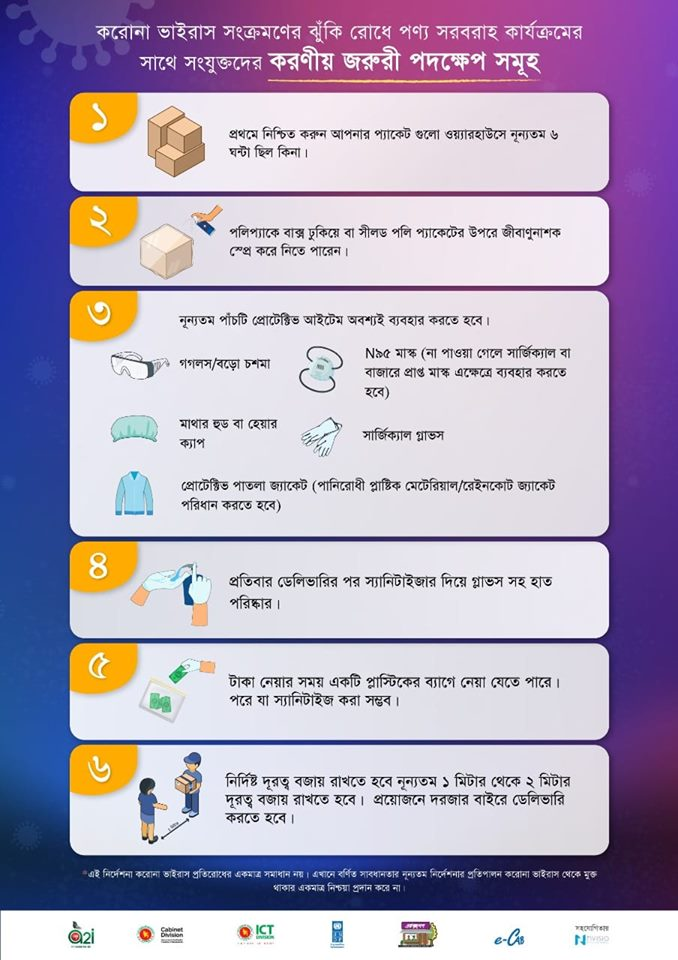
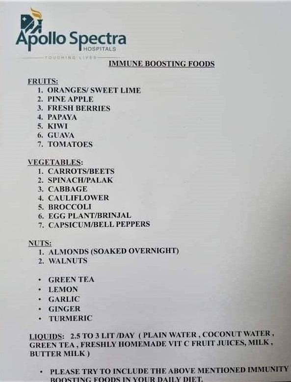
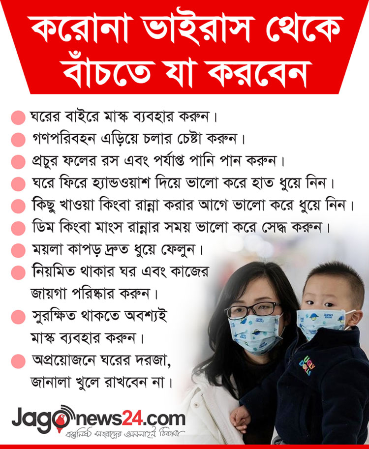
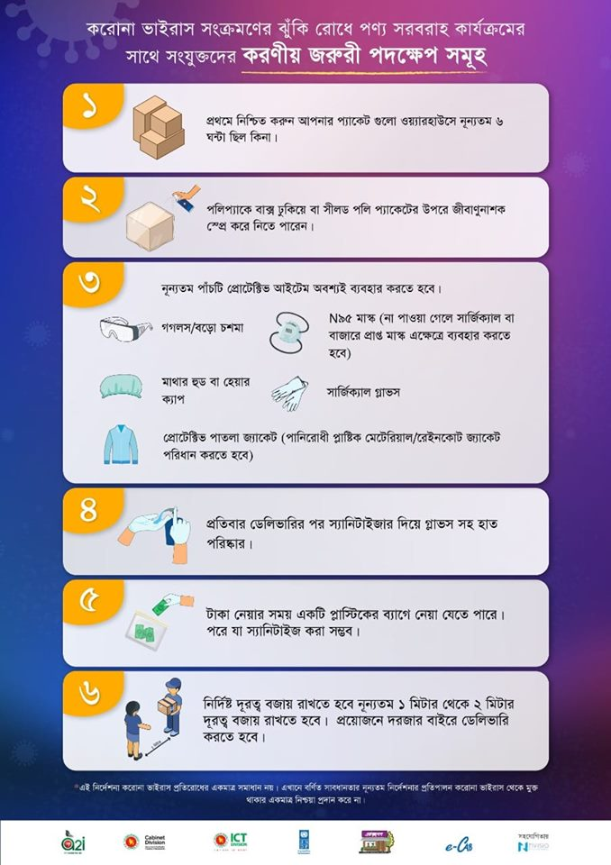
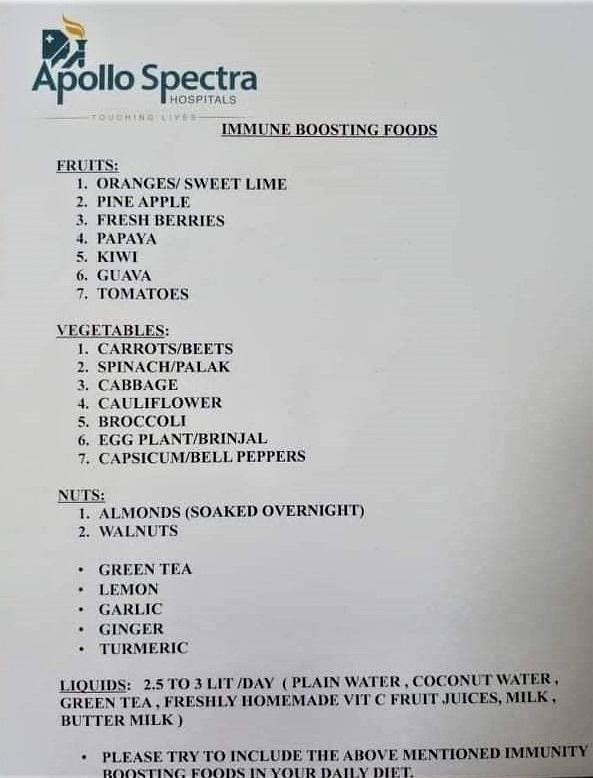
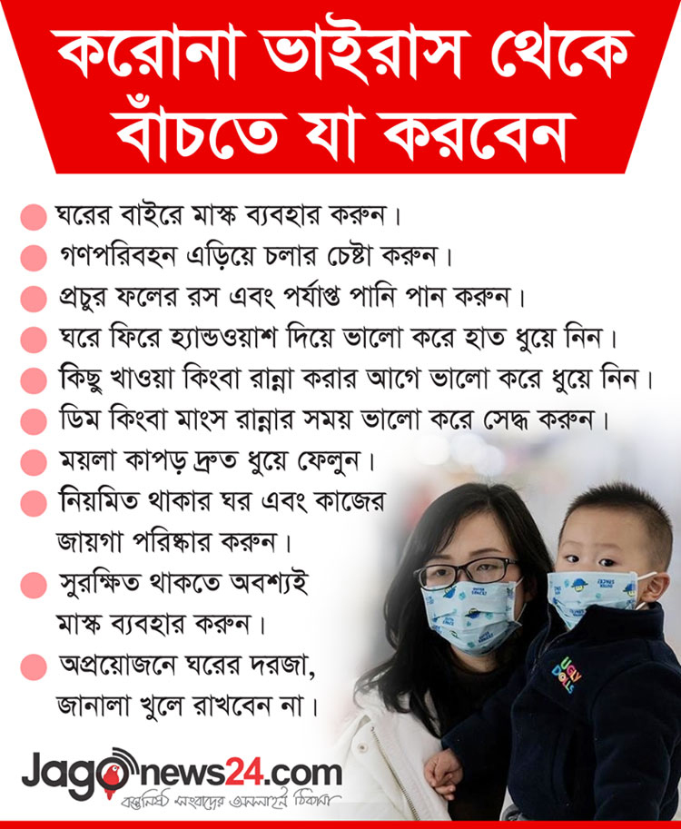

বাহির থেকে আসার পর/ নাক পরিষ্কার করার পর/
হাঁচি বা কাশি
দেওয়ার পর
সাবান দিয়ে কমপক্ষে ২০ সেকেন্ডের হাত
ধুয়ে নিন।
যদি সাবান বা পানি পাওয়া না যায় তবে
হ্যান্ড স্যানিটাইজার
ব্যবহার করুন যার মধে কমপক্ষে 60% অ্যালকোহল বিদ্যমান। আপনার হাতের সমস্ত পৃষ্ঠকে পরিষ্কার
করুন
এবং শুষ্ক বোধ না হওয়া পর্যন্ত ঘষুন।
হাত না ধুয়ে আপনার চোখ, নাক এবং মুখ স্পর্শ
করা থেকে এড়িয়ে
চলুন।
ঘনিষ্ঠ যোগাযোগ এড়িয়ে চলুন
অসুস্থ মানুষের সঙ্গে ঘনিষ্ঠ যোগাযোগ থেকে বিরত।
যদি আপনার সম্প্রদায়ে COVID-19 ছড়িয়ে পড়ে
তবে নিজের এবং
অন্যান্য লোকের মধ্যে দূরত্ব বজায় চলুন। বিশেষত যারা খুব অসুস্থ হওয়ার ঝুঁকি নিয়ে থাকেন
তাদের জন্য এটি গুরুত্বপূর্ণ।।
অসুস্থ হলে বাড়িতেই থাকুন
অসুস্থ হলে চিকিৎসার জন্যে না বেরিয়ে বাড়িতেই থাকুন।
হাঁচি এবং কাশি দেওয়ার সময় মুখ ঢেকে রাখুন
কাশি বা হাঁচি দেওয়ার সময় আপনার মুখ এবং নাক
টিস্যু দিয়ে অথবা
কনুইয়ের অভ্যন্তরীণ অংশ দ্বারা ঢেকে রাখুন।
ব্যবহৃত টিস্যু যথাযথ স্থানে ফেলুন।
যদি সাবান বা পানি পাওয়া না যায় তবে
হ্যান্ড স্যানিটাইজার
ব্যবহার করুন যার মধে কমপক্ষে 60% অ্যালকোহল বিদ্যমান। আপনার হাতের সমস্ত পৃষ্ঠকে পরিষ্কার
করুন
এবং শুষ্ক বোধ না হওয়া পর্যন্ত ঘষুন।
ঘনিষ্ঠ যোগাযোগ এড়িয়ে চলুন
যদি আপনি অসুস্থ হন: যখন আপনি অন্য লোকের আশেপাশে থাকেন (যেমন, কোনও ঘর বা যানবাহনে) এবং
কোনও স্বাস্থ্যসেবা সরবরাহকারীর অফিসে প্রবেশের আগে আপনার ফেসমাস্ক পরা উচিত।
যদি আপনি ফেসমাস্ক পরতে সক্ষম না হন (উদাহরণস্বরূপ, কারণ এটি শ্বাসকষ্টে সমস্যা সৃষ্টি করে)
তবে আপনার কাশি এবং হাঁচি ঢাকার জন্যে আপনার যথাসাধ্য চেষ্টা করা উচিত এবং আপনার যত্ন
নেওয়া
লোকেরা যদি আপনার ঘরে প্রবেশ করেন তবে তাদের ফেসমাস্ক পরা উচিত।
যদি আপনি অসুস্থ না হন: অসুস্থ ব্যক্তির যত্ন
না নিলে
আপনাকে ফেসমাস্ক পড়তে হবে না (এবং তারা ফেসমাস্ক পরতে সক্ষম নয়)। ফেসমাস্কগুলোর
সরবরাহ কম হতে পারে এবং সেগুলি ডাক্তার/নার্সদের জন্য সংরক্ষণ করা উচিত।
পরিষ্কার এবং জীবাণুমুক্তকরণ
প্রতিদিন প্রায়ই স্পর্শ করা হয় এমন পৃষ্ঠ বা বস্তুগুলিকে পরিষ্কার এবং জীবাণুমুক্ত করে নিন
যার মধ্যে
রয়েছে টেবিল, দরজার হাতল, সুইচগুলি, ডেস্ক, ফোন,
কীবোর্ড, টয়লেট, পানির কল এবং রান্নাঘরের সিঙ্ক।
ব্যবহৃত টিস্যু যথাযথ স্থানে ফেলুন।
যদি পৃষ্ঠগুলি নোংরা হয় তবে এগুলি পরিষ্কার
করুন। জীবাণুমুক্ত করার আগে ডিটারজেন্ট বা সাবান এবং পানি ব্যবহার করুন।
জীবাণুনাশক তৈরি
জীবাণুমুক্ত করতে:
বেশিরভাগ সাধারণ EPA-নিবন্ধিত জীবাণুনাশক কাজ করবে। পৃষ্ঠের জন্য উপযুক্ত
জীবাণুনাশক ব্যবহার করুন।
পানির সাথে ব্লিচিং পাঊডার মিশিয়েঃ
৫ টেবিল চামচ (১/৩ কাপ) ব্লিচিং পাঊডার প্রতি গ্যালন পানিতে
অথবা
পানির ১/৪ পরিমাণের জন্যে ৪ চা চামচ ব্লিচিং পাঊডার
অ্যালকোহল মিশ্রণঃ
মিশ্রণে কমপক্ষে ৭০% অ্যালকোহল রয়েছে কিনা তা নিশ্চিত করতে হবে


 




